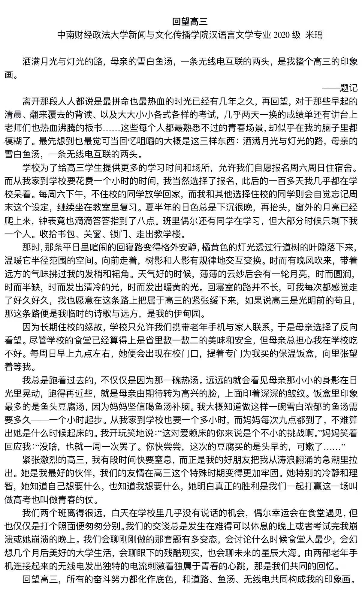
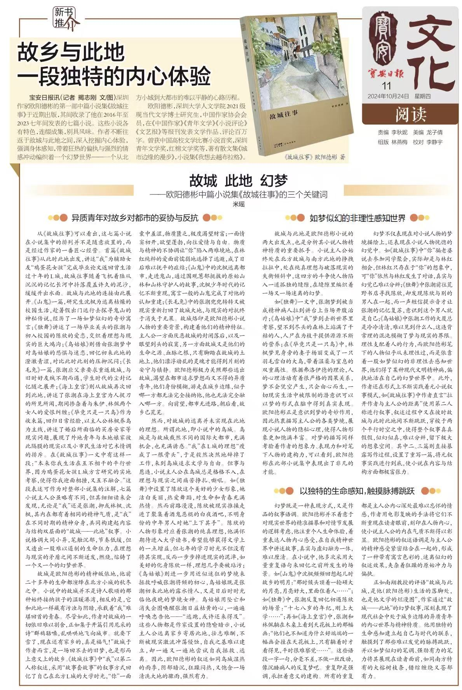

06 / PORTFOLIO
作品展示
公开发表文本作品
Writing Background
在中南财经政法大学
新闻与文化传播学院汉语言文学专业
就读期间,保持文学创作与评论写作习惯。
散文作品《回望高三》
以细腻笔触记录青春奋斗岁月,展现人文关怀与情感温度;
文学评论《故乡与此地》
发表于《宝安日报》,以专业视角解读欧阳德彬中篇小说集,展现扎实的文本分析能力与学术素养。
01 / Personal Essay
回望高三
校园文学作品
|
作者:米瑶
|
中南财经政法大学
|
查看原文 →

散文《回望高三》:以"母亲的雪白鱼汤"等意象,再现"最拼命也最热血"的高三时光
CORE CONTENT
文章以
第一人称视角
回忆高三住校生活,通过
"洒满月光与灯光的路""母亲的雪白鱼汤"
等具象意象,生动再现备考岁月的孤独与坚持。作者描绘了
每周日母亲从家到校送鱼汤的温暖细节
,以及独自在橘黄色灯光下复习的宁静夜晚,将这段充满紧张与奋斗的时光比喻为
"临时的诗歌与远方""伊甸园"
,表达对青春岁月的深切怀念与独特感悟。文章
情感真挚、笔触细腻
,展现人文关怀与叙事功底。
02 / Literary Criticism
故乡与此地
一段独特的内心体验
宝安日报
|
作者:米瑶
|
公开发表

文学评论《故乡与此地》:发表于《宝安日报》,评析欧阳德彬中篇小说集《故城往事》
CORE CONTENT
文章是对
欧阳德彬中篇小说集《故城往事》
的专业书评,从
三个核心关键词
切入分析:
①异质青年对故乡/都市的妥协与反抗
,剖析主人公在城乡边缘的精神困境;
②如梦似幻的非理性感知世界
,探讨小说在现实与梦境间跳跃的叙事结构;
③以独特生命感知触摸脉搏跳跃
,解读"故事套故事"的叙事手法与张力。文章
逻辑严密、分析深入
,展现扎实的文本细读能力与文学评论素养,体现汉语言文学专业背景下的
学术写作功底
。